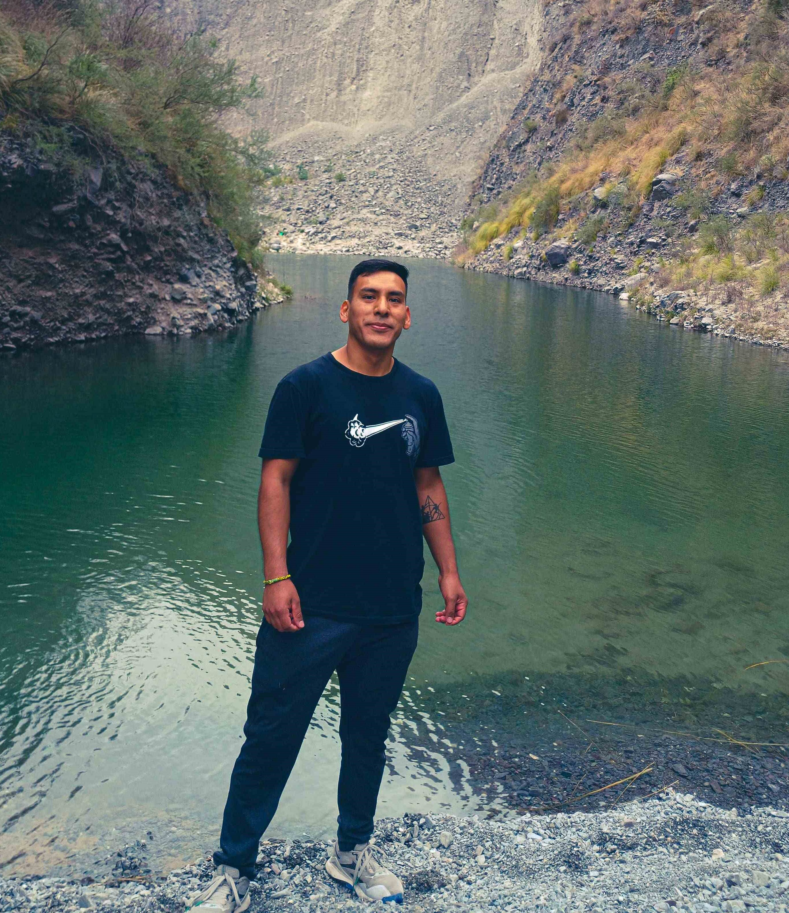
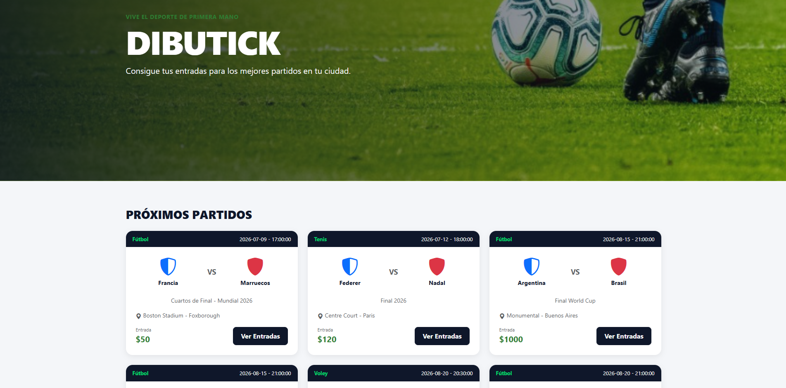
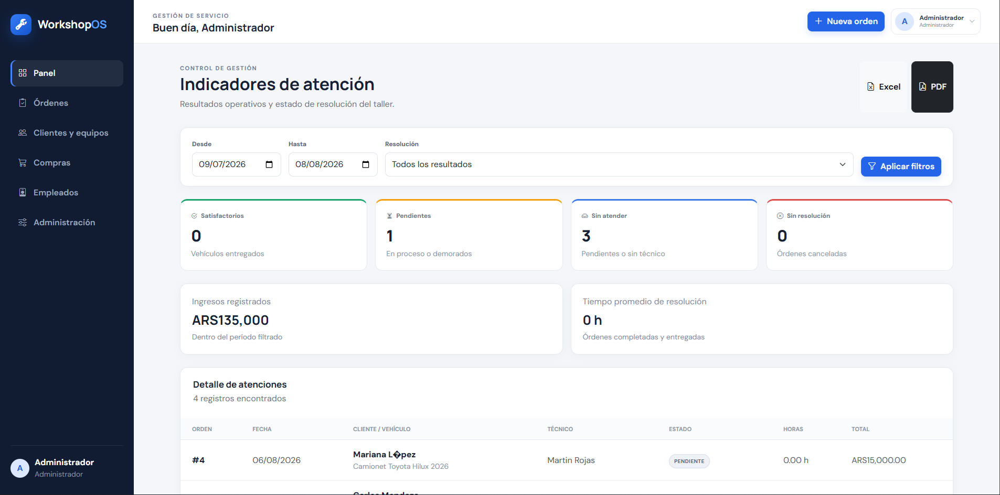
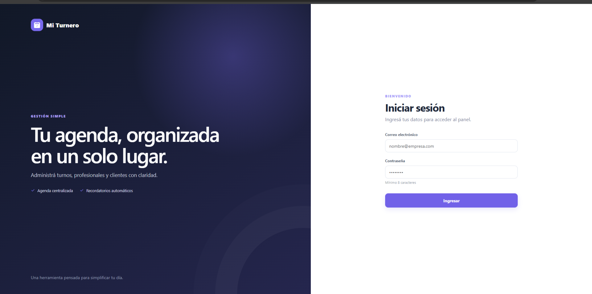
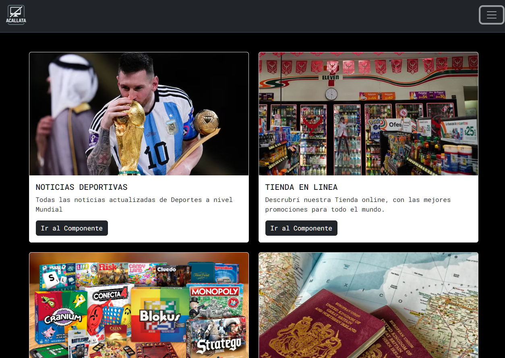

Disponible para nuevos proyectos
De una idea.A algoextraordinario.
Soy Agustín Callata, Analista Programador Universitario y estudiante avanzado de Ingeniería Industrial. Diseño y desarrollo experiencias web rápidas, claras y escalables.
CREATIVE DEVELOPER ↗

</>
Full StackFrontend + Backend
ArgentinaTrabajo remoto
ANGULAR✦NODE.JS✦TYPESCRIPT✦POSTGRESQL✦✦✦✦✦
01
Sobre mí
Una mirada técnica y estratégica
Desarrollo soluciones digitales de punta a punta: desde interfaces modernas hasta APIs, autenticación y bases de datos. Mi formación en programación e ingeniería me permite combinar experiencia de usuario, rendimiento y análisis para resolver problemas reales.
Trabajo con foco en comunicación clara, código mantenible y entregas que puedan crecer junto al negocio.
02El código detrás
De punta a punta
El código detrás
de la experiencia.
01FRONTEND↗
Interfaces claras, rápidas y adaptables. El punto donde una idea se encuentra con las personas.
AngularReactTypeScriptJavaScriptHTML5CSS3
02BACKEND & APIs↗
La lógica que conecta todo: autenticación, servicios y datos para aplicaciones completas.
Node.jsExpressLaravel.NETREST APIsJWTCORS
03DATOS & CLOUD↗
Información organizada para respaldar decisiones y acompañar la evolución de cada proyecto.
PostgreSQLMySQLNeonPower BIGitGitHub
UNA IDEA / TRES CAPAS
01 / LO QUE VES
Todo empieza
con una experiencia.
Interfaces claras, adaptables y pensadas para que cada interacción tenga sentido.
ANGULAR · TYPESCRIPT · CSS02 / LO QUE LO HACE POSIBLE
Detrás de cada clic,
una conexión.
Servicios, reglas de negocio y autenticación. Las piezas que convierten una interfaz en una aplicación.
NODE.JS · EXPRESS · REST APIs03 / LO QUE LE DA VALOR
Datos que se vuelven
decisiones.
Información organizada y conectada con la operación. Del primer registro a una visión más clara del negocio.
POSTGRESQL · SQL · POWER BI03
Trabajo seleccionado
Proyectos recientes

Dibutick
Catálogo comercial con una interfaz visual, clara y adaptable. Cuenta con Apis de Mercado Pago, Google Maps, Google Auth, Dashboard
Ver proyecto
WorkshopOs
Sistema de gestión de Mantenimiento destinado a optimizar procesos y mejorar la eficiencia operativa.
Ver proyecto

04
Demos en funcionamiento
Soluciones reales
Turnero digital
Una solución pensada para organizar reservas, simplificar la atención y brindar una experiencia clara al cliente y al administrador.
- Flujo de reserva intuitivo
- Gestión centralizada
- Interfaz adaptable
WorkshopOS
Sistema creado para centralizar la operación de mantenimiento, organizar información y facilitar el seguimiento de tareas desde una interfaz clara.
- Organización operativa
- Seguimiento de mantenimiento
- Información centralizada
¿Tenés una idea?
Construyamos algo valioso juntos.
Contame qué necesitás y te responderé a la brevedad.